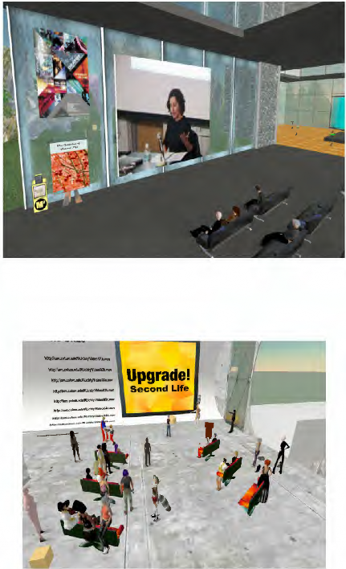

AVAIR - Ars Virtua Artist-in-Residence
AVAIR - Ars Virtua Artist-in-Residence (AVAIR) is an extended performance that examines what it means to reside in a place that has no physical location. Ars Virtua presents artists with a radical alternative to "real life" galleries: 1) Since it does not physically exist artists are not limited by physics, material budgets, building codes or landlords. Their only constraints are social conventions and (malleable-extensible) software. 2) The gallery is accessible 24 hours a day to an unlimited number of people in every part of the world simultaneously. 3) Because of the ever evolving, flexible nature of Second Life the "audience" is a far less predictable variable than one might find a Real Life gallery.
Residents will be encouraged to explore, experiment with and challenge traditional conventions of art making and distribution, value and the art market, artist and audience, space and place. See http://arsvirtua.com/residence and http://turbulence.org/AVAIR/ for more details.
